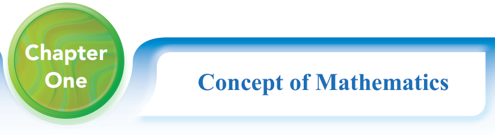
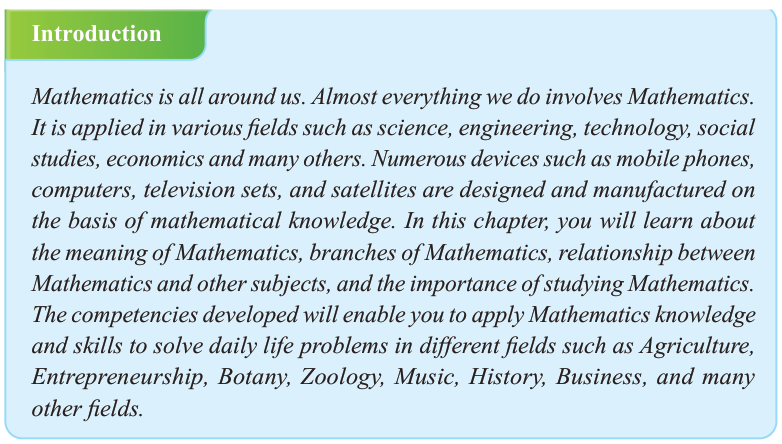

Chapter
One
Concept of Mathematics

Introduction
Mathematics is all around us. Almost everything we do involves Mathematics. It is applied in various fields such as science, engineering, technology, social studies, economics and many others. Numerous devices such as mobile phones, computers, television sets, and satellites are designed and manufactured on the basis of mathematical knowledge. In this chapter, you will learn about the meaning of Mathematics, branches of Mathematics, relationship between Mathematics and other subjects, and the importance of studying Mathematics. The competencies developed will enable you to apply Mathematics knowledge and skills to solve daily life problems in different fields such as Agriculture, Entrepreneurship, Botany, Zoology, Music, History, Business, and many other fields.
Meaning of Mathematics
The word ‘Mathematics’ comes from the Greek word ‘mathema’, meaning ‘which is learnt’ or ‘science, knowledge or learning’. Numbers, measurements, shapes of physical objects, and equations form a small part of it. Mathematics can be thought of as the science of the structures, orders, patterns, and relations that have evolved from elementary practices of counting, measuring, and describing the shapes of objects. It can also be thought of as a language of science because by using mathematical reasoning, one can develop an understanding and be able to predict nature. Mathematics has the ability to provide precise expression for every concept that can be formulated using mathematical symbols and structures. The knowledge and skills of Mathematics play a crucial role in understanding the concepts of other subjects, both in sciences and arts.
Branches of Mathematics
Mathematics can be categorized into different branches such as Arithmetic, Algebra, and Geometry.